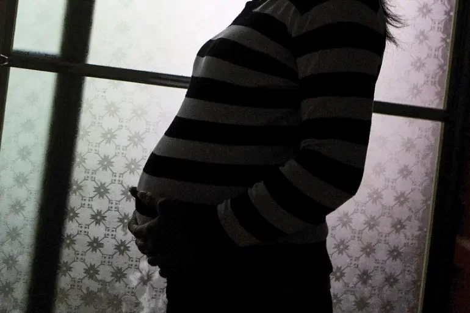

প্রকাশ: ২৪ নভেম্বর ২০২৩, ১৮: ২৩
ইউক্রেনে ২০২২ সালের ফেব্রুয়ারিতে রাশিয়ার হামলা শুরুর পর পরই পাঁচ বছরের পুত্রসন্তানকে নিয়ে দেশ ছেড়ে পালিয়েছিলেন তামারা জাইভা। পোল্যান্ডে কর্মরত স্বামীর কাছে চলে গিয়েছিলেন তিনি। সেখানে ১৮ মাস থাকার পর ২২ সপ্তাহের অন্তঃসত্ত্বা অবস্থায় দেশে ফেরেন। যুদ্ধ পরিস্থিতিতে ঝুঁকি সত্ত্বেও সন্তানকে জন্ম দেওয়ার আশা নিয়ে নিজের মাতৃভূমি ওদেসায় ফেরেন জাইভা।
পাঁচ মাস আগে ইউক্রেনের দক্ষিণ-পশ্চিমাঞ্চলীয় একটি হাসপাতালে কন্যাসন্তানের জন্ম দিয়েছেন ৩৫ বছর বয়সী এ ইউক্রেনীয় নারী। তিনি পেশায় পশু চিকিৎসক।
জাইভা বলেন, ভাষাগত সীমাবদ্ধতার কারণে পোল্যান্ডে চিকিৎসকের সঙ্গে যোগাযোগে জটিলতা হয়েছে। কিছু বিষয় ভুল–বোঝাবুঝি হয়েছে। জাইভা ভেবেছিলেন, তাঁর অনাগত সন্তানের ডাউন সিন্ড্রম আছে। আর এ ভুল–বোঝাবুঝি থেকে তাঁর মনে আশঙ্কা তৈরি হয়। তখন তাঁর মনে হয়, পরীক্ষা করাতে অনেক অর্থ খরচ হবে, যা তিনি সামাল দিতে পারবেন না।
পরে নিজ দেশে ফিরে চিকিৎসকের শরণাপন্ন হওয়ার সিদ্ধান্ত নেন জাইভা। সুস্থ অবস্থাতেই জন্ম নিয়েছে তাঁর সন্তান।
সম্প্রতি ছেলেকেও ইউক্রেনের স্কুলে ভর্তি করিয়েছেন জাইভা। তবে আবার কখন না জানি পালাতে হয়—সে আশঙ্কাও ঘিরে থাকে তাঁকে। এ জন্য সন্তানদের পাসপোর্টগুলো হাতের কাছেই রেখে দিয়েছেন।
জাইভার মতো ৩০ বছর বয়সী আরেক ইউক্রেনীয় নারী অ্যানাও সন্তান জন্ম দিতে পোল্যান্ড থেকে ইউক্রেনে ফিরেছেন। তিনি গর্ভাবস্থার শুরুর দিকেই ইউক্রেন ছেড়ে পালিয়েছিলেন। তাঁর মনে হয়েছিল, সংঘাতপূর্ণ পরিস্থিতিতে ইউক্রেনে থাকাটা তাঁর ও সন্তানদের জন্য নিরাপদ নয়।
তবে পোল্যান্ডে থাকতে গিয়ে অ্যানা বুঝতে পারেন, সেখানে রোগীদের অনেকটাই ঝক্কি পোহাতে হয়। রোগীদের দীর্ঘ সময় অপেক্ষা করতে হয়, তা ছাড়া পর্যাপ্ত পরিচর্যারও অভাব আছে সেখানে।
অন্তঃসত্ত্বা অ্যানা বলেন, ‘এটা খুব কঠিন হয়ে পড়েছিল।’
আগামী বছরের জানুয়ারিতে তাঁর সন্তান প্রসব করার কথা। অ্যানা বললেন, পরিস্থিতি (নিরাপত্তা) পাল্টালে সন্তানকে নিয়ে বিদেশে পাড়ি জমানোর ইচ্ছা আছে তাঁর।
ইউক্রেনের স্থানীয় বেসরকারি উন্নয়ন সংস্থার তথ্য এবং নিউইয়র্কের সেন্টার ফর রিপ্রোডাক্টিভ রাইটসের (সিআরআর) গবেষণা অনুসারে, শুধু এই দুই নারীই নন, বিদেশ থেকে অন্তঃসত্ত্বা অবস্থায় ইউক্রেনে ফিরেছেন শত শত নারী। মূলত তাঁরা যেসব দেশে গিয়েছিলেন, সেখানে মাতৃত্বকালীন পর্যাপ্ত পরিচর্যার ব্যবস্থা না থাকায় যুদ্ধকবলিত ইউক্রেনে ফিরতে বাধ্য হয়েছেন।
সিআরআরের ইউরোপবিষয়ক প্রধান লিয়াহ হক্টর আল–জাজিরাকে বলেন, এসব দেশে নারীরা যে ধরনের প্রতিবন্ধকতার মুখে পড়েছেন, তাতে তাঁদের মনে হয়েছে ইউক্রেনে ফিরে যাওয়াটাই তুলনামূলক সহজ।
শরণার্থীদের ক্ষেত্রে সুনির্দিষ্ট কিছু প্রতিবন্ধকতা থাকে। যেমন ভাষাগত প্রতিবন্ধকতা এবং তথ্যের ঘাটতি। এ ছাড়া কিছু কাঠামোগত সমস্যাও আছে। যেমন সম্পদ কিংবা তহবিলের ঘাটতি।
হক্টর বলেছেন, গবেষণার স্বার্থে যাঁদের সাক্ষাৎকার নেওয়া হয়েছে, তাঁদের অনেকেই বলেছেন, ইউক্রেনের তুলনায় বিদেশের মাটিতে পরিচর্যার মাত্রাটা অনেক কম।
হাঙ্গেরি, রোমানিয়া, স্লোভাকিয়া ও পোল্যান্ড—এই চার দেশে সিপিআর তাদের গবেষণা চালিয়েছে। এসব দেশে এনজিওগুলো নারীদের সহযোগিতায় তৎপর আছে।
হাঙ্গেরির নারী অধিকারবিষয়ক সংগঠন এমার কর্মী আনা ইভানিয়ি দেশটির স্বাস্থ্যব্যবস্থা সম্পর্কে বলেন, এই ব্যবস্থায় ঢুকলে একেবারেই হাবুডুবু খেতে হয়। শরণার্থীদের জন্য আলাদা করে এ সম্পর্কে ধারণা দেওয়া হয় না।
এমার স্বেচ্ছাসেবীরা চিকিৎসকের সঙ্গে নারীদের সাক্ষাতের ব্যবস্থা করে দেন, তাঁদের সঙ্গে থাকেন। মাঝেমধ্যে বিভিন্ন প্রতিষ্ঠানের বিরূপ আচরণ থেকে ইউক্রেনীয় নারীদের বাঁচানোর চেষ্টা করেন তাঁরা।
রোমানিয়ায় ইনডিপেনডেন্ট মিডওয়াইভস অ্যাসোসিয়েশনের অ্যাডভোকেসি কর্মকর্তা কারমেন রাডু বলেন, দেশটিতে শরণার্থীদের জন্য সরকারি খরচে স্বাস্থ্য সুরক্ষাসেবা দেওয়ার নিয়ম থাকলেও কোনো কোনো চিকিৎসক চিকিৎসা ফি চেয়ে বসেন। আবার কেউ কেউ ইউক্রেনীয়দের চিকিৎসা দিতে চান না।
কারমেন রাডুর তথ্যমতে, রাশিয়ার হামলা শুরুর পর শত শত ইউক্রেনীয় নারী রোমানিয়া ছেড়ে দেশে চলে গেছেন।
ইউক্রেনের রোমা শরণার্থীদের নিয়ে কাজ করছে পোল্যান্ডের এনজিও ফাউন্ডেশন টুওয়ার্ডস ডায়ালগ। এর ভাইস প্রেসিডেন্ট মালগোরজাতা কোলাচজেকও বলেছেন, শত শত অন্তঃসত্ত্বা নারী পোল্যান্ড ছেড়ে চলে গেছেন।
ইউরোপজুড়ে রোমা জনগোষ্ঠীর মানুষেরা নিপীড়নের শিকার হয়ে থাকে। কোলাচজেক বলেন, ‘সত্যিকার অর্থে আমি মনে করি না, এখানে থাকার জন্য পোল্যান্ড তাঁদের উৎসাহিত করে।’
আন্তর্জাতিক সংস্থা ইন্টারন্যাশনাল প্ল্যান্ড প্যারেন্টহুডের সহযোগী প্রতিষ্ঠান হিসেবে ইউক্রেনে কাজ করছে ওম্যান হেলথ অ্যান্ড ফ্যামিলি প্ল্যানিং (ডব্লিউএইচএফপি) নামের প্রতিষ্ঠানটি।
ডব্লিউএইচএফপির ইউক্রেনের প্রধান এবং স্ত্রীরোগ–বিশেষজ্ঞ গালিনা মাইসত্রুক বলেন, ‘কিছু দেশের তুলনায় আমাদের এখানে স্ত্রীরোগের ক্ষেত্রে উন্নত চিকিৎসা এবং পারিবারিক চিকিৎসকের ব্যবস্থা আছে। এমনকি যুদ্ধের সময়েও এ ব্যবস্থা ভেঙে পড়েনি।’
কিয়েভভিত্তিক সংস্থাটি ইউক্রেনের প্রসূতি ক্লিনিকগুলোতে চিকিৎসা সরঞ্জাম সরবরাহ করে থাকে। বর্তমানে রাশিয়ার নিয়ন্ত্রণে থাকা মারিউপোল শহরের তিনটি হাসপাতালেও তারা চিকিৎসা সরঞ্জাম পাঠায়। ২০২২ সালের মার্চে মারিউপোলে একটি প্রসূতি ওয়ার্ডে বোমা হামলা চালায় রাশিয়া। এতে অন্তত তিনজন নিহত হন।
কিয়েভের ১ নম্বর প্রসূতি হাসপাতালের চিকিৎসকেরা এখন শীতের প্রস্তুতি নিতে ব্যস্ত। হাসপাতালের সহপরিচালক ওলেকসান্দ্রা লিসেঙ্কো বলেন, গত বছর হাসপাতালটির চিকিৎসক এবং কর্মীরা বিদ্যুৎ ও পানির সংকটে ছিলেন। তুষার গলিয়ে সে পানি ব্যবহার করেছিলেন তাঁরা। এখন হাসপাতালে নিজস্ব পানির উৎস আছে, দুটি জেনারেটর আছে। পাশাপাশি বোমা হামলার সময় নিরাপদ থাকতে হাসপাতালটিতে বিশেষ ব্যবস্থাসম্পন্ন একটি আশ্রয়কেন্দ্রও আছে।
তবে এরপরও হাসপাতালটির কর্মীরা দুশ্চিন্তামুক্ত হতে পারছেন না।
লিসেঙ্কো মজা করে বলছিলেন, প্রতি রাতে এক চুমুক বিয়ার পান করে তিনি তাঁর অনিদ্রা কাটানোর চেষ্টা করেন।
ডব্লিউএইচএফপির প্রধান মাইসত্রুক বলেন, ইউক্রেনীয়রা মানসিকভাবে ভীষণ পীড়ার মধ্যে আছেন। চিকিৎসকেরা বলেছেন, রোগীদের মধ্যে অনেক ধরনের জটিলতা তাঁরা দেখতে পেয়েছেন।
কয়েকটি গবেষণায় দেখা গেছে, ইউক্রেনে সংঘাতপূর্ণ পরিস্থিতিতে গর্ভকালীন জটিলতা ও গর্ভপাত বেড়েছে।
ইউক্রেনের স্ত্রীরোগ–বিশেষজ্ঞ লিউদমিলা ইভানোভা বলেন, ‘আমরা অপরিণত শিশু জন্মহার এবং গর্ভকালীন জটিলতা বাড়তে দেখেছি।’
লিউদমিলা ইভানোভা আরও বলেন, তাঁর রোগীদের প্রায় ৪০ শতাংশই যুদ্ধের শুরুতে চলে গেছে। তবে এখনো অনেকে তাঁর সঙ্গে ফোনে যোগাযোগ করেন। একবার নেদারল্যান্ডসের হাসপাতালে একজন সন্তান প্রসবের সময় ভিডিও কনফারেন্সিং অ্যাপ জুমের মাধ্যমে তাঁর সঙ্গে যুক্ত ছিলেন।
ইভানোভার মতে, যুদ্ধকালীন মানসিক চাপের কারণে নারীরা নানা স্ত্রীরোগসংক্রান্ত জটিলতায় ভুগছেন।